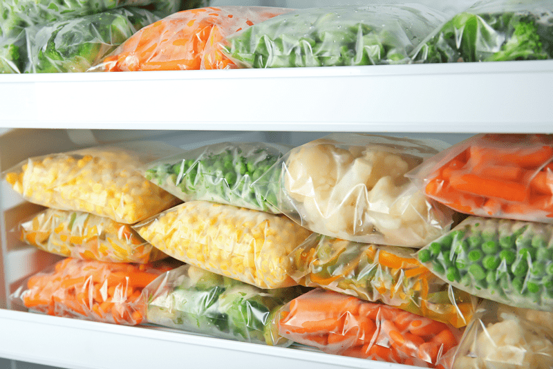
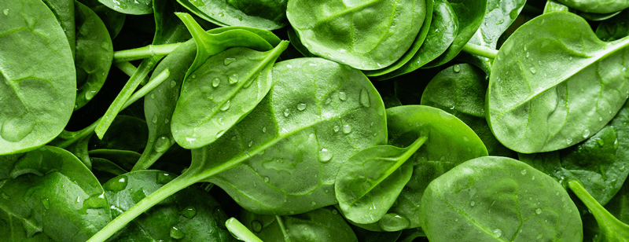
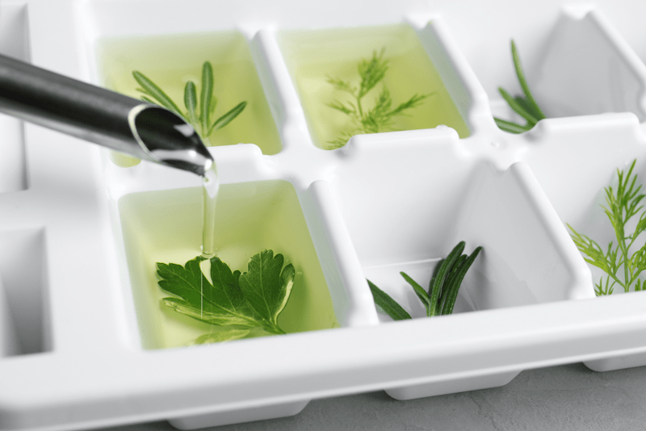
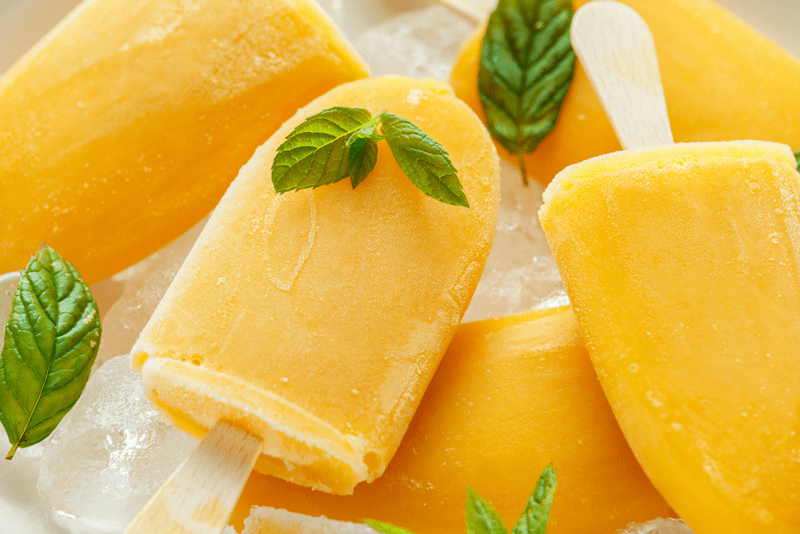
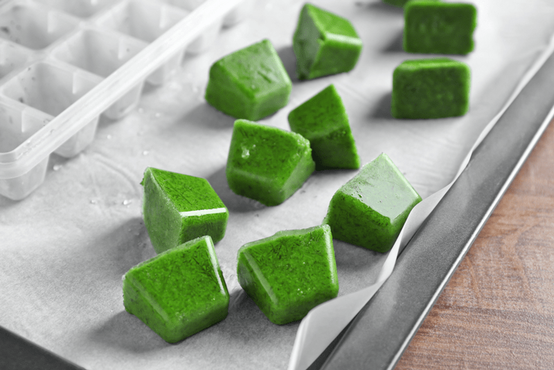

How to Freeze Fresh Produce
With the world’s current events, our members-only Facebook group has been talking about ways to preserve food for long-term storage. Someone asked how to go about preserving fresh produce. So today, I am going to share several techniques. I will start the post off by defining different techniques, followed by step-by-step instructions. So without further ado, here are some different methods for freezing fresh produce.

Blanching | Boiling Water – Defined
Blanching vegetables for freezing just means boiling them in water for just a few minutes, then dunking them in ice water to stop the cooking process. It stops enzyme actions which can cause loss of flavor, color, and texture. It cleanses the surface of dirt and organisms, brightens the color, and helps to slow the loss of vitamins. Freezing vegetables without blanching them first results in faded or dulled coloring, as well as “off” flavors and textures.
Blanching | Steam – Defined
Steam seems like the most logical approach to maintain as many nutrients, but according to National Care for Home Preservation, the use of steam is recommended for only a few vegetables, such as broccoli, pumpkin, sweet potatoes and winter squash.
Flash Freezing – Defined
Flash-freezing refers to the practice of freezing individual pieces of food separately (usually by spreading them out on a baking sheet or tray), then packing the frozen food in airtight containers or freezer bags for longer storage. Typically I flash freeze only berries, sliced bananas, and cherries. On occasion, when I am short on time, I will flash freeze fresh-cut raw veggies and leafy greens that I know I will use sooner than later.
So for now, here are three options to choose from. Below I break each process down in step-by-step instructions.

Flash Freezing Produce Without Blanching
I use this method most of the time, since I am constantly dipping into my freezer looking for “fresh” veggies and fruit to eat on a daily basis.
- To flash-freeze, line a tray or baking sheet with parchment paper and spread your fresh produce out on the sheet in a single layer. Place the baking sheet in the freezer for several hours until they are frozen all the way through.
- Once they are frozen, transfer the produce into an airtight container, freezer bag, or a vacuum-sealed bag (best option).
- Label each package; include the name of the product, any added ingredients, packaging date, and the serving size. Use freezer tape or labels made especially for freezer use.
- Freeze up to 3 months, which is my personal estimate based on my experience. After 3 months, the produce seems to lose more color and flavor. Tips on freezing bananas: Freeze them BEFORE they are too ripe (just when you start seeing a few spots on the skins) because bananas continue to sugar even while frozen, which leads to an “off” taste and a darkening of the fruit.
Blanching | Boiling Water Method
For a list of blanching times based on what vegetables you are working with, refer to The University of Minnesota. Read through all the steps before starting so you can have everything ready.
- Start with organic (if possible) vegetables that are at their peak of maturity (firm, straight, not lumpy). Freezing lackluster vegetables will only lead to thawed lackluster vegetables.
- Wash, trim, and cut vegetables in desired sizes.
- Get a pot of boiling water ready (about 2/3 filled) and a LARGE bowl with ice and cold water.
- Put the vegetables into a wire steamer basket and lower into boiling water.
- Cover and start counting the blanching time as soon as the water returns to a boil.
- Boil to set amount of time per different type of vegetable.
- Immediately place the blanched produce in the ice water for the same time used in blanching. Stir vegetables several times to ensure even cooling.
- Drain vegetables thoroughly and then pat them dry. Any extra moisture can cause a loss of quality when vegetables are frozen.
- Read “Packaging” down below.
Blanching | Steam Method
Steam seems like the most logical approach to maintain as many nutrients but according to National Care for Home Preservation, the use of steam is recommended for only a few vegetables (broccoli, pumpkin, sweet potatoes, and winter squash). Click (here) to find blanching times for the items you are working with.
- To steam, use a pot with a tight lid and a steam basket that holds the food at least three inches above the bottom of the pot.
- Put an inch or two of water in the pot and bring the water to a boil.
- Put the vegetables in the basket in a single layer so that steam reaches all parts quickly.
- Cover the pot and keep the heat high. Start counting steaming time as soon as the lid is on.
- Immediately place the blanched produce in the ice water for the same time used in blanching. Stir vegetables several times to ensure even cooling.
- Drain vegetables thoroughly and then pat them dry. Any extra moisture can cause a loss of quality when vegetables are frozen.
- Read “Packaging” down below.
Packaging
I love using my FoodSaver for frozen foods, because it removes all the air from the bag, which cuts down on moisture collecting in the bag, which leads to freezer-burn (ice crystals form and start to break down the quality of the food). If you don’t own a vacuum food sealer to freeze foods, place food in a Ziploc bags and zip the top shut, but leave enough space to insert the tip of a soda straw. When straw is in place, remove air by sucking the air out. To remove straw, press straw closed where inserted and finish pressing the bag closed as you remove straw.
- Freeze. When placing in the freezer leave a little space between packages so air can circulate freely. Then, when the food is frozen, store the packages close together.
- Frozen vegetables will maintain high quality for 8 to 12 months at zero degrees (F) or lower.

Freezing Fresh Herbs
Even though freezing helps to preserve the flavor of fresh herbs, the cells become damaged during the process. Once thawed they will render a limp texture. Frozen herbs also tend to lose their color and are best added directly to dishes where their appearance is not important. They are not suitable to use for garnishing.
This may sound silly, but before you start this process, check your freezer space to make sure you have room. It might be a good time to organize your freezer, removing outdated food, etc.
Method #1 – freezing them whole
- To freeze fresh herbs, start by washing and drying them thoroughly.
- Place them on a baking sheet (test to see if it fits into the freezer first) in a single layer, and transfer the tray to the freezer.
- Once the herbs are frozen, transfer them to a plastic freezer bag (be sure to date and label the contents). Squeeze out the excess air from the bag and freeze for 6 to 12 months.
Method #2 – freezing them chopped
- This method is used when you want to freeze pre-measured set amounts of herbs. You will need an ice cube tray for this method.
- Roughly chop the leaves of fresh herbs before freezing.
- Fill each compartment of an ice cube tray with 1 tablespoon of chopped herbs.
- Top up with water or olive oil and freeze just as you would ice cubes.
- Once frozen, transfer the herb cubes to a plastic freezer bag, making sure to remove all the air from the bag.
- It is not necessary to thaw frozen herbs before using them.
Fruits – If All Else Fails…

Blend the fruits you need to freeze and pour it into popsicle molds. I am sort of being silly, but hey–when time is short and you don’t have time to fuss around with it…
Green Leafy Veggies – If All Else Fails…

Blend the leafy green veggies with a little water, pour into ice cube trays, and freeze. Once frozen, pop them out and put in a freezer-safe container. Use as needed in smoothies or soups!
© AmieSue.com